Overview
The Martinos pseudoCT package generates a subject-specific attenuation map from a T1-weighted MPRAGE image using the atlas-based method described by Izquierdo-Garcia et al.
It is intended for PET/MR attenuation-correction workflows at the
Athinoula A. Martinos Center for Biomedical Imaging. MPRAGE input
can be supplied either as the original DICOM series or as a
preprocessed NIfTI image (.nii or
.nii.gz).
For normal subject processing, use
PseudoCT v3 — MLSC
(mlsc-current). PseudoCT v3 — Local
(local-current) remains available as an alternate.
Reference
D. Izquierdo-Garcia, A.E. Hansen, S. Förster, D. Benoit, S. Schachoff, S. Fürst, K.T. Chen, D.B. Chonde, and C. Catana. An SPM8-based Approach for Attenuation Correction Combining Segmentation and Non-rigid Template Formation: Application to Simultaneous PET/MR Brain Imaging. Journal of Nuclear Medicine. 2014;55(11):1825–1830.
Software acknowledgement
In addition to citing the methodological publication above, work using this tool should acknowledge Michele Scipioni, PhD, for development, integration, and maintenance of the Martinos pseudoCT software.
Software location and versions
PseudoCT is deployed at:
/usr/pubsw/packages/mrpet/standalone_apps/PseudoCT/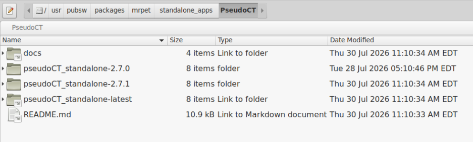
pseudoCT_standalone-latest link to the current
recommended release.
Which version should I use?
For a new subject or a new study, users should normally use
pseudoCT_standalone-latest. v3.0.2 remains the latest
published archive; the v3.1.1 source/documentation version is not
yet published or deployed. v2.8.4 was the last published archive before v3.0.2.
v3.0.0 was withdrawn for an MLSC validation issue, and v3.0.1
was withdrawn because its source wrapper broke the established
installation layout. v3.0.2 resolves both; its compiled scientific
executable is unchanged. The accepted MLSC executable described in
the provenance record is current-lineage PseudoCT v3 compiled using
MATLAB R2010b, not the historical Aether v2 implementation. Its
association with job 10515471 is unverified; the available
scientific evidence is dataset-specific. No v3.1.1 publication or
production deployment is claimed.
If processing for a study will take place over an extended period, select a specific numbered release and use the same version for the entire study. This maintains software-version consistency across the dataset.
New versions will be deployed regularly to add functionality or fix minor issues. If a problem is discovered that makes continued use of an older version inadvisable, that change will be explicitly communicated and motivated.
Quick start
-
Add pseudoCT to the MATLAB path.
From a checkout, add the repository root; from an installed
version, add its installation root:
addpath('/usr/pubsw/packages/mrpet/standalone_apps/PseudoCT/pseudoCT_standalone-latest') % installed numbered version layout: % addpath('/usr/pubsw/packages/mrpet/standalone_apps/PseudoCT/pseudoCT_standalone-<version>') -
Run pseudoCT.
run_pseudo_CT - Select PseudoCT v3 — MLSC for routine processing. PseudoCT v3 — Local remains available as an alternate.
- Select the first DICOM of the MPRAGE series, or select the single preprocessed NIfTI file.
- Confirm that the UMAP has been found automatically.
- Leave the automatic MPRAGE correction options enabled unless you have a specific reason not to.
- Click OK and keep MATLAB open until the run finishes.
- Inspect both the TIFF fusion image and the final DICOM pseudoCT before using it for attenuation correction.
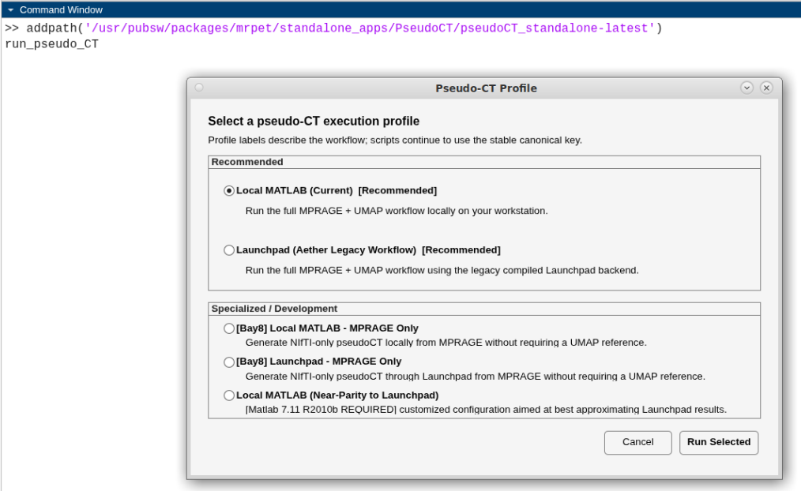
run_pseudo_CT, then choose an execution profile.
It is recommended to run pseudoCT from a working directory close to the data rather than changing into the software installation directory.
To pin processing to a numbered release, use that version explicitly (checkout root or installed version root):
addpath('/usr/pubsw/packages/mrpet/standalone_apps/PseudoCT/pseudoCT_standalone-<version>')Execution profiles
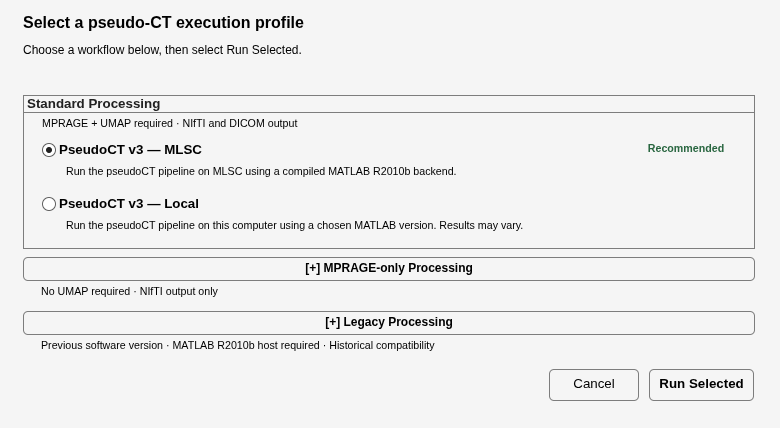
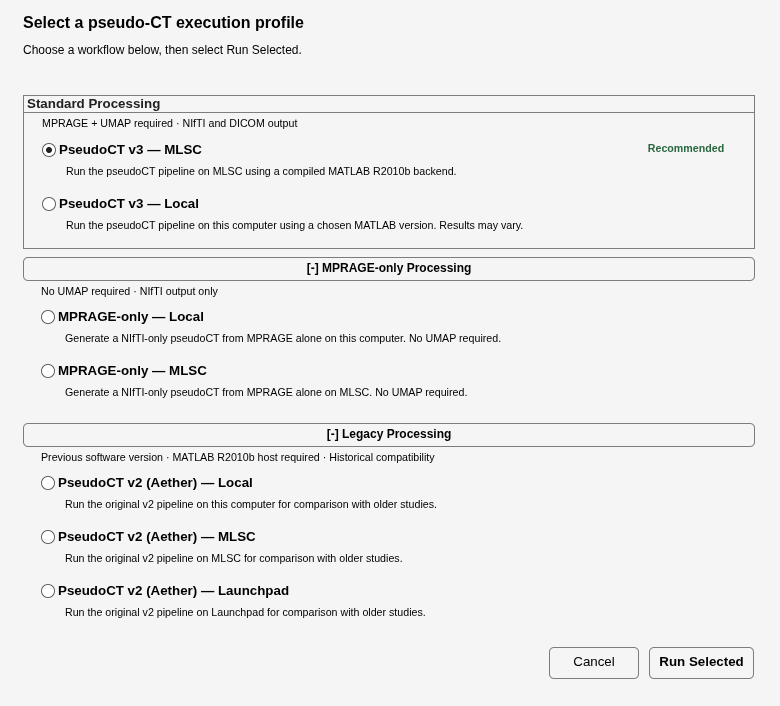
PseudoCT uses profile-based execution. Implementation
(current PseudoCT v3 lineage vs legacy-v2
compiled Aether v2 backend) and execution (local
workstation vs mlsc cluster vs
launchpad remote) are independent properties.
Current and Legacy follow different numerical paths; no
universal equivalence is claimed. Always inspect the QC image.
The selector groups profiles as Standard Processing,
MPRAGE-only Processing, and
Legacy Processing. Standard Processing presents
PseudoCT v3 — MLSC (mlsc-current) as
the recommended default and keeps PseudoCT v3 — Local
(local-current) available. The labels are display
names; canonical profile IDs remain unchanged. PseudoCT v3 — MLSC
uses the current lineage compiled with MATLAB R2010b, not the
historical Aether v2 implementation. It fails closed if required runtime or artifact
validation fails and does not silently fall back to Local or a
historical profile.
MPRAGE-only Processing and
Legacy Processing are separate groups. MPRAGE-only
contains MPRAGE-only — Local
(local-mprage-only) and
MPRAGE-only — MLSC
(mlsc-mprage-only); both generate NIfTI-only output
without a UMAP. Legacy contains
PseudoCT v2 (Aether) — Local
(local-legacy),
PseudoCT v2 (Aether) — MLSC
(mlsc-legacy), and
PseudoCT v2 (Aether) — Launchpad
(launchpad-legacy); site resources may be unavailable.
The development profile is available only by explicit canonical
key, not in the routine selector. Scripts use canonical profile
keys, not display labels. The bare key
mlsc is a deprecated alias for
mlsc-legacy; deprecated Launchpad aliases are not
supported.
Standard profiles require the UMAP reference and produce both NIfTI and DICOM output. MPRAGE-only profiles do not require a UMAP and produce NIfTI output only.
PseudoCT v3 — MLSC
Recommended default
Runs the full MPRAGE + UMAP workflow on MLSC using the current
PseudoCT v3 lineage compiled with MATLAB R2010b
(mlsc-current). This is not the historical v2 Aether
implementation. Requires a valid
cluster account and provisioned resources. The accepted
current-lineage artifact uses MATLAB R2010b, Compiler 4.14, and
MCR 7.14; an unmet artifact/runtime requirement fails closed.
PseudoCT v3 — Local
Available
Runs the full MPRAGE + UMAP workflow locally on the workstation
using the current MATLAB source (local-current).
This remains an available alternative to PseudoCT v3 — MLSC.
PseudoCT v2 (Aether) — Local
Historical
Runs the full MPRAGE + UMAP workflow locally on the workstation
using the legacy v2.0 compiled backend
(local-legacy) with direct-local execution. There
is no login dialog and no cluster submission on this path.
Selectable under Legacy Processing for historical compatibility.
Legacy profiles require a MATLAB R2010b host.
PseudoCT v2 (Aether) — MLSC
Historical
Runs the standard MPRAGE + UMAP workflow on the MLSC cluster
using the legacy v2.0 compiled backend
(mlsc-legacy). It requires the UMAP reference and
produces both NIfTI and DICOM output. Legacy profiles require a
MATLAB R2010b host.
Use requires a valid cluster account and provisioned paths.
PseudoCT v2 (Aether) — Launchpad
Historical
Runs the full MPRAGE + UMAP workflow on the legacy remote path
(launchpad-legacy), selectable under Legacy
Processing. Legacy profiles require a MATLAB R2010b host. No new
correctness claim is made beyond the dataset-specific states
recorded in the technical notes.
This group contains MPRAGE-only — Local
(local-mprage-only; generate NIfTI-only pseudoCT
from MPRAGE alone on this computer, no UMAP required) and
MPRAGE-only — MLSC
(mlsc-mprage-only; generate NIfTI-only pseudoCT
from MPRAGE alone on MLSC, no UMAP required).
They are not intended for routine use.
The deprecated keys (launchpad,
launchpad-mprage-only,
local-near-parity-r2010b) are never shown in the
selector and are not supported.
MLSC remote workflow
PseudoCT v3 — MLSC (mlsc-current) is the current-lineage
standard MLSC workflow. mlsc-legacy remains available
separately under Legacy Processing. A user-accepted R2010b
run verified MLSC completion and copyback, DICOM output, output
promotion, and cleanup for one dataset; this does not establish
universal numerical equivalence or clinical correctness.
The accepted run is dataset-specific and does not establish universal parity. Cluster accounts and paths remain site-provisioned. Executor host, CPU allocation, and build identity must not be inferred from profile configuration or from this acceptance record.
Login dialog
When a remote profile is selected, MATLAB shows a login dialog asking for the cluster username and password. Credentials are entered at runtime, held only for the connection, and never saved in profiles, scripts, logs, or outputs. Cancelling the login dialog stops before any cluster work is submitted. A rejected login fails without any submission attempt.
Account dialog
After a successful login, available cluster accounts are discovered at runtime. If no account is available, processing stops before submission. If one account is available, it is selected automatically. If several accounts are available, a single-selection dialog is shown; cancelling that dialog submits nothing. The selected account is used only for that run and is not saved.
Progress, completion, and failure
After submission, MATLAB monitors the cluster job and then performs local finalization (including DICOM output for standard profiles). Keep MATLAB open until the run finishes. Closing MATLAB can leave remote work unfinalized even when the cluster job has continued.
A run completes only when the required attenuation map is present and non-empty and local finalization succeeds. Anything else — a failed connection, no account, a cancelled dialog, a failed or cancelled cluster job, a missing or empty attenuation map, or a finalization problem — stops before promotion and leaves the run log and temporary files for diagnosis. Rerunning restarts from the beginning.
The profile summary is written before dispatch: it records the canonical profile ID, submitter MATLAB, configured scientific paths/settings, and requested aliasing/recentering options. Those settings are not proof that a step ran. No per-stage confirmation is recorded for aliasing or recentering, so their completion is Not confirmed. After an MLSC job, the application refreshes the summary from that run's lifecycle/finalization evidence when available. Scheduler state and local finalization describe recorded current-run outcomes; executor hostname, CPU, runtime, and build remain unknown unless an actual record proves them. Missing facts are shown as Not confirmed or Not recorded, not inferred from the configured scheduler or final status.
Logs
Each subject receives a detailed run log under
MR_PET plus the usual
pseudo_CT_profile_summary.txt. Keep both with the
QC image when asking for support. They record the selected
profile, stages, and final status without credentials.
See the detailed MLSC pipeline documentation for the full technical contract, readiness checks, and output handling.
Preparing the input data
The standard PET/MR workflow requires a T1-weighted MPRAGE and a corresponding UMAP. PseudoCT supports either the original MPRAGE DICOM data or a preprocessed MPRAGE NIfTI. MPRAGE-only profiles are the exception: they do not require a UMAP and produce NIfTI output only.
DICOM MPRAGE
The minimum required folder structure is:
<subject>/
└── MR/
├── MPRAGE/
└── UMAP/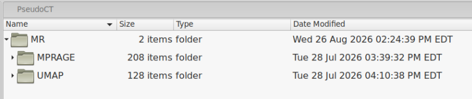
When selecting the MPRAGE, choose the
first DICOM file of the MPRAGE series. The
MR_PET folder does not need to exist before processing;
pseudoCT creates it.
Preprocessed NIfTI MPRAGE
If preprocessing is needed, place the resulting .nii or
.nii.gz image in <subject>/MR_PET/.
The original MR/MPRAGE and MR/UMAP folders
may remain in place.
<subject>/
├── MR/
│ ├── MPRAGE/
│ └── UMAP/
└── MR_PET/
└── preprocessed_mprage.nii.gz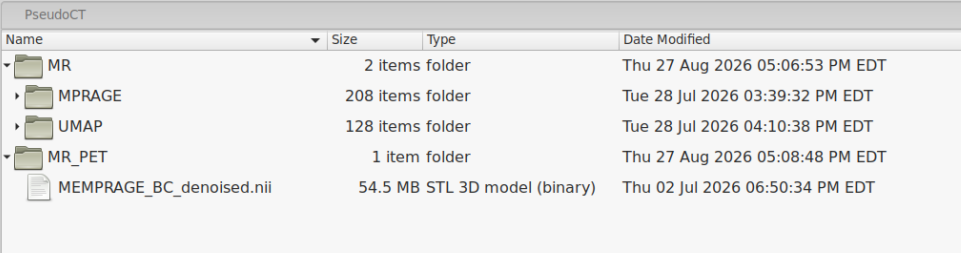
In some subjects, noise in the image background can interfere with segmentation and can ultimately produce spurious tissue-like attenuation values outside the head. Background cleanup may be useful in those cases. A dedicated preprocessing tool is planned for release.
Single-subject workflow
After selecting PseudoCT v3 — Local, the Load Images dialog is shown.
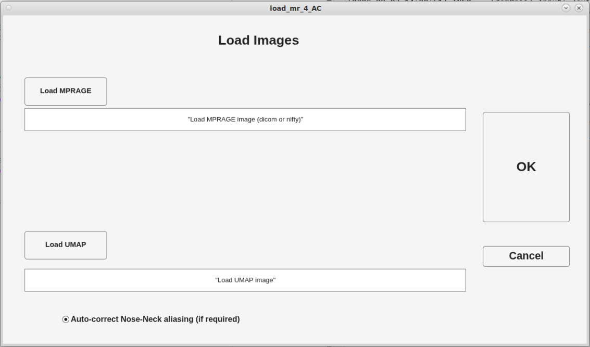
1. Load the MPRAGE
Click Load MPRAGE. For DICOM input, select the
first file in the MPRAGE series. For NIfTI input, select the single
.nii or .nii.gz file.
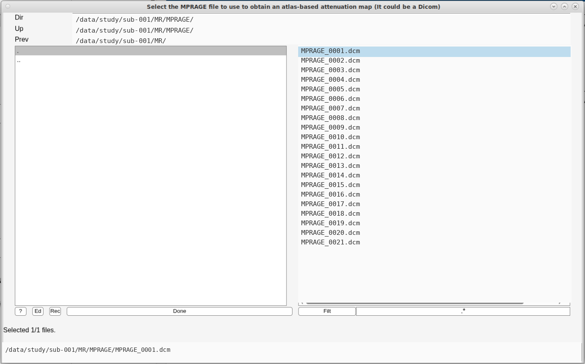
2. Confirm the UMAP (standard profiles)
When the expected directory structure is present, pseudoCT
automatically searches the sibling MR/UMAP folder and
populates the UMAP field. In normal use, you should not need to
click Load UMAP manually. MPRAGE-only profiles
skip this step by policy because they do not use a UMAP reference.
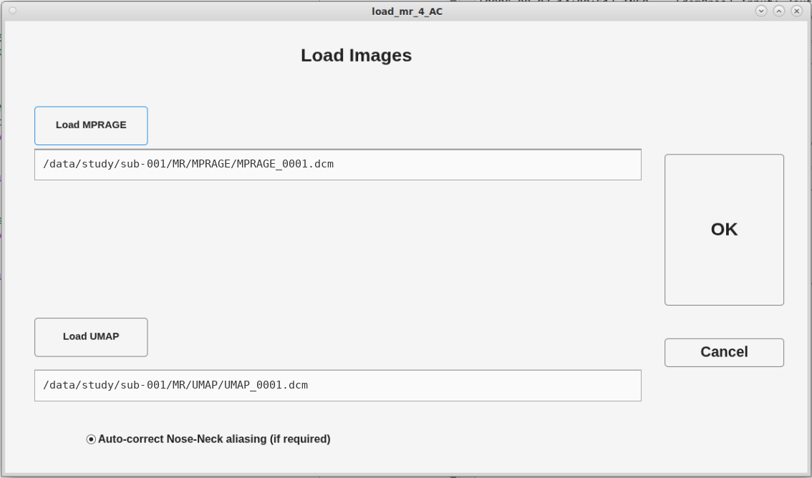
3. MPRAGE correction options
PseudoCT can apply automatic preprocessing to improve segmentation and registration to the MNI atlas, including correction of nose/neck wrap-around aliasing and recentering of the brain within the field of view.
Leave automatic aliasing correction and recentering enabled. The application determines whether a correction is actually required, so leaving these options ON is the preferred approach in most cases.
The preprocessing controls are currently being revised, so their exact appearance may change between releases.
4. Start processing
Once the input paths are correct, click OK. MATLAB must remain open for the duration of the run. Cancelling or closing the dialog starts no processing.
Batch processing
Multiple subjects can be selected in one run using the batch file picker:
run_pseudo_CT('profile', 'local-current', 'subjects', 'batch')Select the first MPRAGE DICOM for each subject (or the desired NIfTI input for each subject), then click Done. PseudoCT processes the selected subjects sequentially and discovers each subject's UMAP from the expected folder structure.
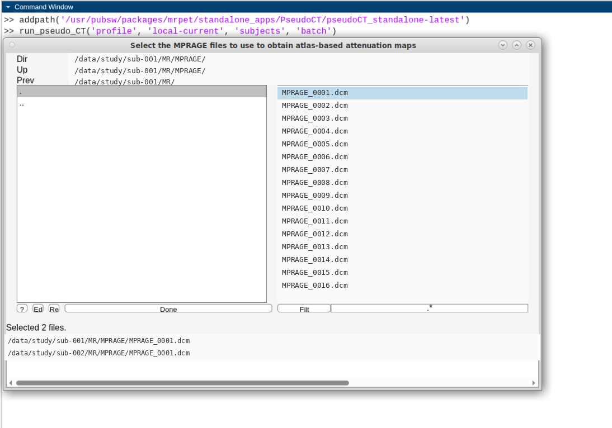
For a long-running study, run the batch with the same numbered pseudoCT release used for the rest of the study rather than switching versions midway through processing.
During processing
MATLAB prints stage-by-stage status messages and writes a detailed
run log in
MR_PET.
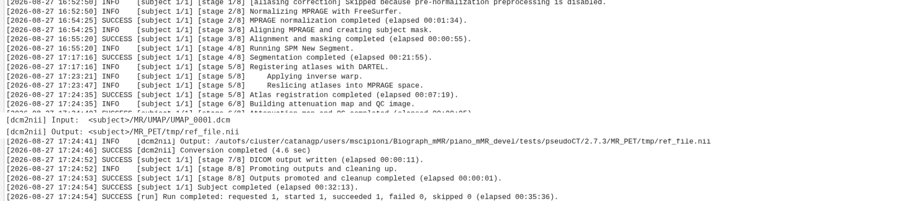
Interrupting a run
It is safe to interrupt pseudoCT, but interruption stops the current processing run. Intermediate files generated up to that point are retained.
Starting pseudoCT again for the same subject restarts processing from the beginning and overwrites existing processing files as needed.
Closing MATLAB or interrupting execution stops the local run. For MLSC, MATLAB must remain open while the cluster job is monitored and while local finalization is performed.
Outputs
PseudoCT creates the required output directories automatically. After a successful PseudoCT v3 — Local run, the subject directory contains:
<subject>/
├── MR/
│ ├── MPRAGE/
│ ├── UMAP/
│ └── pseudo_muMAP/
│ └── final DICOM pseudoCT series
└── MR_PET/
├── att_map.nii
├── Fusion_MR_Pseudo_CT_validation.tiff
├── MPRAGE_spm.nii
├── MPRAGE_spm_normalized.nii
├── Pseudo_CT_AC_Version.txt
├── pseudo_CT_local-current_*.log
└── pseudo_CT_profile_summary.txt
Standard remote profiles use the same final output layout after
cluster processing and local finalization. Their required
output is MR_PET/att_map.nii; the QC fusion TIFF,
version record, and normalized MPRAGE are included when
produced. MPRAGE-only profiles do not require a
UMAP and produce NIfTI output only, so they do not create the final
DICOM series under MR/pseudo_muMAP/.
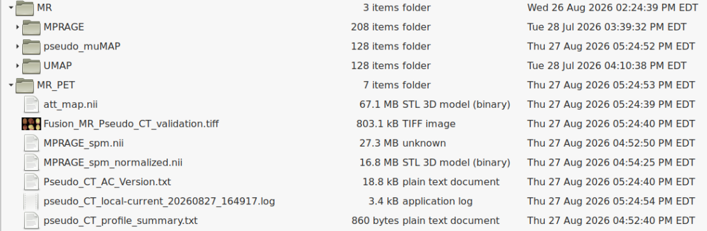
MR/pseudo_muMAP/
The final pseudoCT is written here as a DICOM series for downstream PET/MR use.
att_map.nii
The final pseudoCT attenuation map in NIfTI format.
Fusion_MR_Pseudo_CT_validation.tiff
QC image used to inspect MPRAGE/pseudoCT coregistration.
pseudo_CT_local-current_*.log
Detailed processing log for the subject.
pseudo_CT_profile_summary.txt
Concise provenance record of the selected profile, important settings, and MATLAB environment.
Pseudo_CT_AC_Version.txt
Records the pseudoCT software version and associated release history.
Profile provenance
The profile summary is a bounded provenance record, not a complete account of exactly how a subject was processed. It distinguishes configured/requested settings from outcomes actually recorded for the current run.
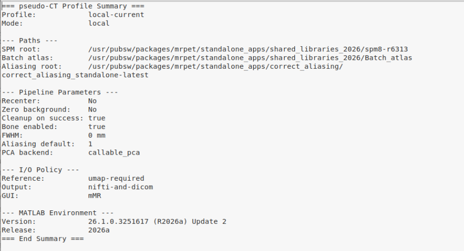
pseudo_CT_profile_summary.txt from a
PseudoCT v3 — Local run.
During processing, intermediate files are staged under
MR_PET/tmp/. On a successful run this temporary
directory is cleaned up. If processing is interrupted, intermediate
files are retained.
Quality control
Every generated pseudoCT should be visually inspected before it is used for PET attenuation correction. QC has two parts: coregistration review and direct inspection of the final attenuation map.
1. Check MPRAGE / pseudoCT coregistration
Open Fusion_MR_Pseudo_CT_validation.tiff from
MR_PET. Inspect the overlaid MPRAGE and pseudoCT in all
displayed orientations.
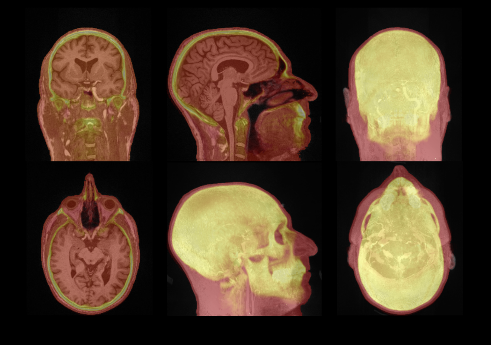
Look for:
- consistent alignment of the pseudoCT with the MPRAGE anatomy;
- agreement of the skull and brain contours;
- reasonable alignment around the nose, sinuses, and posterior head;
- no gross atlas-registration mismatch;
- no missing, displaced, or obviously distorted skull regions;
- no obvious failure related to poor positioning of the brain within the field of view.
2. Inspect the final DICOM pseudoCT
Open the DICOM series in MR/pseudo_muMAP/ using a
proper DICOM image viewer and scroll through the entire volume. Do
not rely only on the TIFF fusion image.
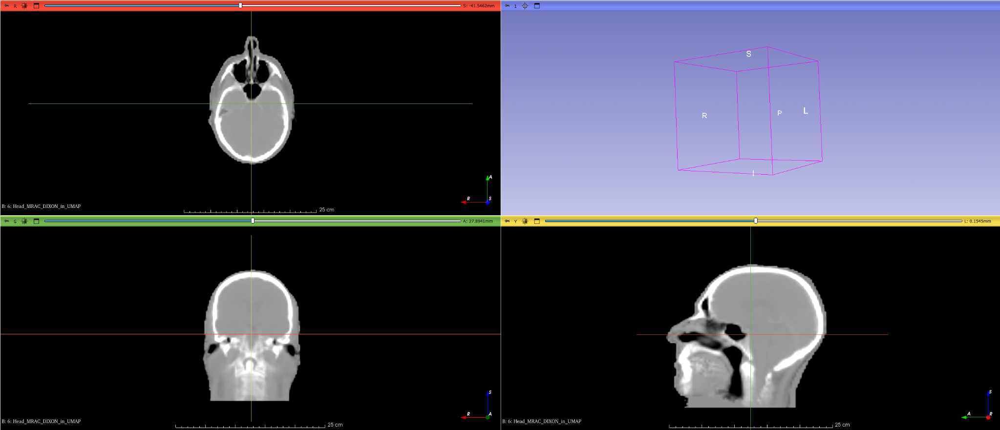
Inspect for unexpected attenuation values or artifacts inside and outside the head. A known failure mode is background noise in the MPRAGE being segmented and classified as soft tissue instead of air, producing spurious tissue-like attenuation in the background.
Do not use the pseudoCT without further review. Clean the MPRAGE
background, save the cleaned image as a NIfTI file under
MR_PET, and rerun pseudoCT. A dedicated
background-cleanup tool is planned for release.
Troubleshooting
| Problem | What to check |
|---|---|
run_pseudo_CT is not found |
Confirm that the actual
pseudoCT_standalone-latest or numbered-release
directory was added to the MATLAB path.
|
| The UMAP field does not auto-populate |
Confirm that the subject contains an
MR/UMAP folder with the correct UMAP acquisition
and that the MPRAGE comes from the expected subject directory.
|
| Processing was interrupted |
Intermediate files may remain under MR_PET. Rerun
pseudoCT; processing restarts from the beginning and
overwrites existing processing files as needed.
|
| MPRAGE and pseudoCT are visibly misregistered | Do not use the result. Verify the selected MPRAGE, inspect positioning, leave the automatic correction options enabled, and rerun. Review the log if the problem persists. |
| Soft-tissue-like attenuation appears in the background |
Inspect the MPRAGE for background noise. Clean the background,
place the resulting NIfTI in MR_PET, and rerun
pseudoCT.
|
| Launchpad profile confusion |
Only launchpad-legacy is selectable
(availability restoration only). The deprecated keys
(launchpad, launchpad-mprage-only)
are never shown in the selector and are not supported.
Use PseudoCT v3 — MLSC for routine processing; PseudoCT v3 —
Local remains available as an alternate.
|
| MLSC does not submit | Confirm the login dialog was accepted with correct credentials. Cancelling the login dialog or the account-selection dialog stops before submission, and a user with zero available accounts cannot submit. Check the run log for the exact stage message. Retain the failure detail for support. |
| MLSC finishes without an attenuation map |
A finished cluster job alone is not sufficient. Confirm
that MR_PET/att_map.nii is present and
non-empty. Local finalization is not started when this
check fails; retain the log and temporary files for
diagnosis.
|
Keep the run log, pseudo_CT_profile_summary.txt, QC
TIFF, and software version available. These files usually provide
the most useful first-pass information for diagnosing a failed or
suspicious run.
More information
This page is intentionally an operator guide. Detailed implementation, validation, numerical-parity, release-history, and developer documentation are maintained with the source repository. See the MLSC pipeline documentation, the Launchpad Legacy availability note, the numerical parity assessment, the v3.0.2 changelog entry, and the accepted artifact provenance record for validation material and limits.
Maintainer: Michele Scipioni, PhD — mscipioni@mgh.harvard.edu